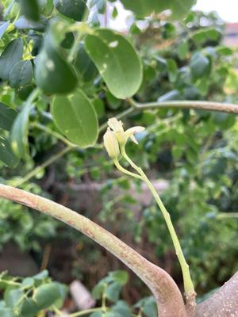
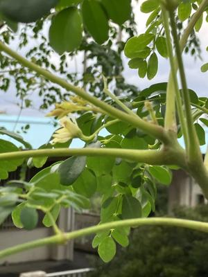
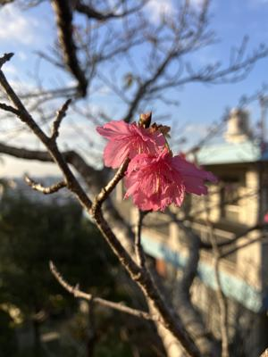
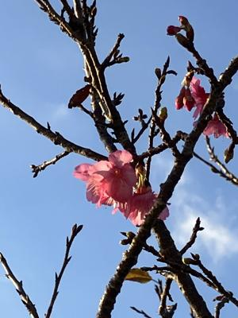

うるがいの話 ある日
最新: 朝寝坊【うるがいの話 ある日】とは 一日だけのプログです
『うるがいの話』の最新一日だけのプログで、通信料が少なく経済的だ。カニの画像をクリックすると全ての日付が載る『うるがいの話』サイトを表示します
|
|
【うるがいの話】 うるがい(ｳﾙｶﾞｲ urugai)とは、『もずくがに』の名前でとても大きくなります。 |
|---|---|
|
|
【カミマヤーの話】 猫のことを方言でマヤーといいます。カミマヤー（kamimayaa）とは、神の猫のことです。 |
|
【たながぁの音楽】 たながぁ（ﾀﾅｶﾞｰ tanagaa）とは手長えびのことで、何種類かあり大きいのは車 エビぐらいになります。 |

|
【ぶながぁの話】 ぶながぁ(ﾌﾞﾅｶﾞｰ bunagaa)とは、赤い髪の毛、赤い身体、そして身長は１ｍ２０ｃｍ ぐらい、川の蟹を食べているの目撃された。場所は沖縄県国頭郡大宜味村のと ある村僕の隣近所に住んでいる爺さんから、聞いた話です。 |
|
|
【ギーマの話】 ギーマ(giima)とは、山原の里山に咲くスズランに似た、 花を付けます。実は食べられます、 気が付くと口の周りが紫になっています。 |
2026年01月26日 (月）朝寝坊
15:13
目覚まし時計をみると、７時半前でした！。朝寝坊です、いつも
は４時か、５時、ごくたまには６時。昨日、夜１１時前の眠る前
に、ヨメが作った自家製（家の庭の月桃）の出来立てのムーチを
食べたからでしょうか・・・・。先ほどもムーチを食べました。
冷蔵庫には、沢山の自家製ムーチがあります。あ！、月桃と言え
ば、一中健児之塔慰霊祭のとき首里高校生が歌う『月桃』の曲を
小乗チャンネルのユーチューブ動画にしようと思いつきました。
モリンガの花が７年ぶり（前回は２０１８年１２月１３日）に、
咲かせました。２０２３年の台風６号のあと大木になっていたが
根元から選定したものの、復活した。
 
前回２０１８年１２月１３日の花

桜の花、桜の木に登り撮りました。
 